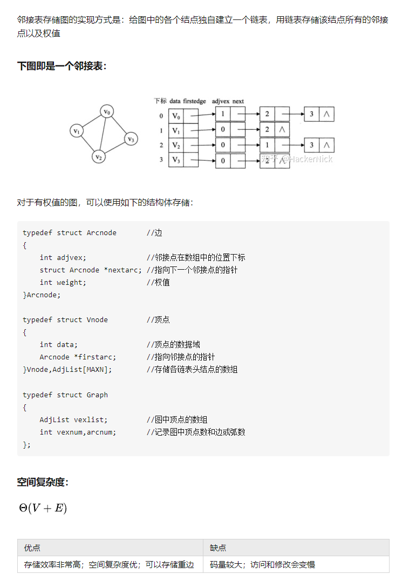
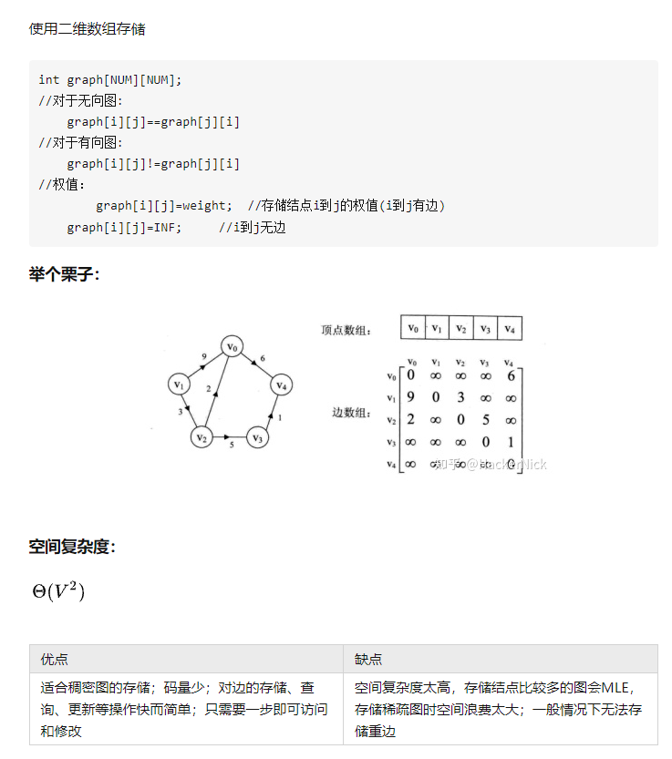
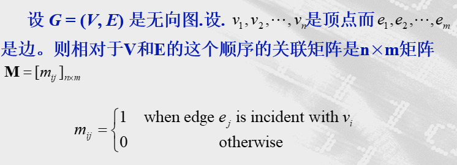
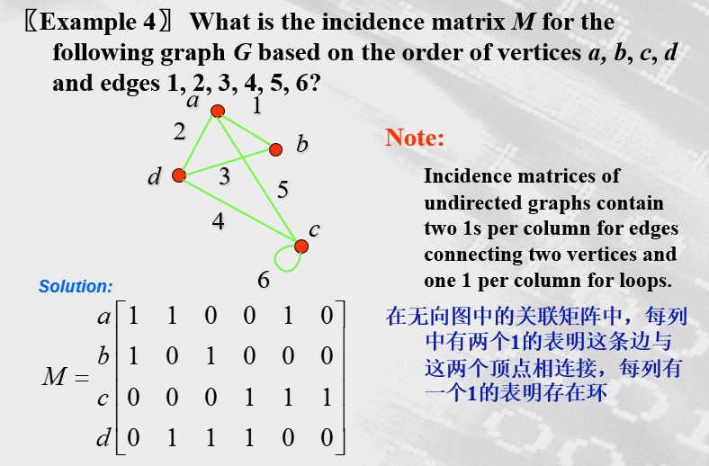
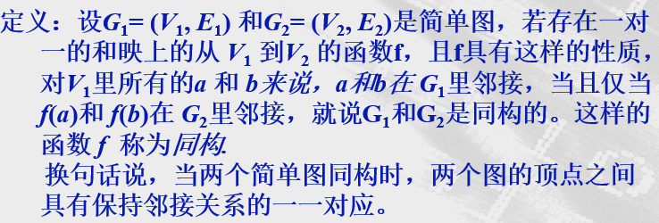
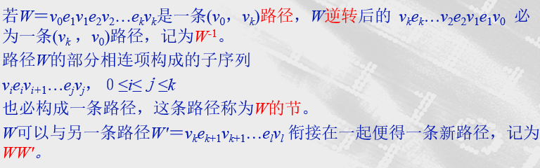

离散：1.图的表示和同构及连通性
图的表示：
-
邻接表

-
邻接矩阵(无向图的邻接矩阵总是对称的)
-
图的邻接矩阵依赖于所选择的顶点的顺序。因此带n个顶点的图有n!个不同的邻接矩阵，因为n个顶点有n!个不同的顺序。
-
当图里的边相对少时，邻接矩阵是稀疏矩阵，即只有很少的非0项的矩阵。可以用特殊的方法来表示和计算这样的矩阵。
-
邻接矩阵也可以表示带环和多重边的无向图,把顶点上的环表示成邻接矩阵（i,i）位置上的1。当出现多重边时候，邻接矩阵不再是0－1矩阵，这是因为邻接矩阵的第( i,j)项等于与{,}关联的边数。包括多重图与伪图在内的所有无向图都具有对称的邻接矩阵

对无向图来说，邻接矩阵每一行各个位置上数字之和代表什么？
等于顶点i的度减去在顶点i上的环数
对于有向图而言，邻接矩阵每一行各个位置上数字之和代表什么？代表该顶点的出度 ,每一列各个位置上数字之和代表什么？代表该顶点的入度
-
-
关联矩阵


图的同构

怎么判断两个简单图是否同构?
相同不变量：
-
相同的顶点数
-
有相同的边数
-
连通分支的数目及其大小
-
两图同构只有当他们具有相同长度的简单回路。
-
应用两图中相应顶点具有相同的度来判断两图的同构情况
连通性
定义1:路径
图G的一个非空点、边交替序列W＝ 称为一条从到的路径或(，)路径，
其中，，是的端点(1≤i≤k)。 称为W的起点，为W的终点，(1≤i≤k－1)为W的内点，k为W的路长。

定义２:迹与路
设 为图G中的一条路径，若边 互不相同，则称该路径为迹；若点序列互不相同，则称该路径为路。
定义３：开闭路径与开闭迹
设 是图G中的一条路径且k≥1，如果，则称该路径为闭路径，否则称为开路径。
特别地，若是一条迹，k≥1，当时称为闭迹，否则称为开迹。 闭迹也称为回路。
定义４：圈
设是一条闭迹，
如果互不相同，
则称该闭迹为圈或k圈，
且当k为偶数时称为偶圈，k为奇数时称为奇圈。
PS.
- 一条路必是一条迹
- 自环和两条平行边都自成一圈
定理1
若图G中每个顶点度数至少为２，则G中必含有圈。
定义５：连通
设G是一个图，u，v∈V(G)，
如果存在从u到v的路，则称u，v是相连的或连通的，若G中任意两点都连通，则称图G是连通的。
图G中顶点之间的连通关系是一个等价关系根据该关系可将V(G)划分成一些等价类，每个导出的子图G()称为G的一个连通分支。
图G的连通分支是图G的连通子图，且该子图不是图G的另一个连通子图的真子图。
G的连通分支数通常用ω(G)表示
G是连通的ω(G)＝1
有向图的连通性与连通图
存在有向(u，v)路，则称v是从u可达的或者弱连通的
若u，v互相可达，则称u，v是双向连通的或者说是强连通的
注意，u、v可以不直接相连，而是“可达”
若对D中任何两顶点，至少有一顶点可从另一顶点可达，即任何两定点间都是弱连通的，则称D是单向连通图或弱连通图
若D中任何两顶点都是双向连通的，则称D是双向连通图或强连通图
有向图G的子图是强连通图但不包含在更大的强连通子图中，可称为G的强连通分支
PS.
- 双向连通关系是D的顶点集V上的一个等价关系
- 双向分支强连通分支
- Ｄ强连通Ｄ恰有一个强连通分支。
定义６：距离
设u，v∈V(G)，若u，v连通，则称最短(u，v)路的长为u，v的距离，记为d(u，v)
当u，v不连通时，认为u，v的距离是∞
定理２
一个图G是二分图G中不含奇圈
当G有n个顶点ω个分支时，怎样让边最多？
G的一个连通分支是n－ω＋1个点的完全图，其余ω－1个连通分支均是弧立点。
- 当ω＝1时，ε≥n－1。即n个顶点的连通图至少有n－1条边
- 具有n个顶点，n－1条边的连通图称为最小连通图。
定义7：割点与割边
有时删除一个顶点和它所关联的边，就产生带有比原图更多的连通分支的子图。把这样的顶点称为割点（或节点）。从连通图里删除割点，就产生不连通的子图。
同理，把一旦删除就产生带有比原图更多的连通分支的子图的边称为割边或桥